rails from scratch
Table of Contents
- 1. 맨 처음 해야 하는것(1. Local 개발환경 만들기)
- 2. Production Server 설치
- 3. webapp 다시 만들기(Local server와 production을 위한 capistrano가 설치된 상황에서)
- 3.1. github에 project를 만든다.
- 3.2. rails new webapp
- 3.3. git push로 github에 반영
- 3.4. capistrano gem설치
- 3.5. capistrano가 github과 aws와 db 접속할 수 있는지 미리 확인한다.
- (1) github 연결가능 확인
- (2) config/deploy.rb 설정- github settings (capistrano는 config/deploy.rb를 참고한다.)
- (3) config/deploy/production.rb설정 -aws와 db환경 설정(config/deploy/production.rb)
- (4) password check-git과 aws의 password?
- (5) cap production deploy - cd config, cap production deploy
- (6) capistrano 추가작업- capfile에 추가작업 추가
- (7) [DB] 관련 설정
- (8) [WEB & APP] nginx서버와 passenger를 키고 새로만든 rails app을 연동시키려면?
- 4. client의 database.yml설정 (development)
- 5. 서버에 관해서 - testing
- 6. log에 관해서
1 맨 처음 해야 하는것(1. Local 개발환경 만들기)
local에서 작업할수 있는 환경을 만든다. gorails에서 지시하는대로 한다. 그 다음 capistrano를 통해 운영서버에 적용하는 환경을 만들것이다. 두 환경은 하나의 rails project에서 동시에 운영된다. 아무 문제 없다. 즉 capistrano 설정을 하면 local에서 작업하지 못하고, local에서 별도로 rails new railsproject를 사용해서 local용을 만들 필요가 없다는 것이다. 하나의 rails 프로젝트에서 test하고 rails s로 local test하고 제대로 되면 운영서버로 배포하는 형태를 가지면 된다.
1.1 local 개발환경
ruby 설치(with rbenv)
rails는 ruby version을 탄다. rails와 ruby version이 궁합이 맞아야 하고, gem들도 맞아야 한다. ruby설치는 rbenv를 사용한다.
rbenv는 여러버전의 ruby를 설치할 수 있는데, 이것이 가능한것은 ruby-build라는 plugin이 있기에 가능하다. rbenv install 3.14 이런식으로 ruby를 설치하는것은 rbenv-build에 있는 rbenv-install에 의해서 가능한 것이다. pyenv도 동일한 형식이다.
brew install rbenv ruby-build
echo 'if which rbenv > dev/null; then eval "$(rbenv init -)"; fi' >> ~.zshrc source ~/.zshrc
rbenv install 3.0.1 rbenv global 3.0.1 ruby -v
git 설치와 설정
rails는 기본적으로 git init의 과정으로 local git을 설정한다. 그래서 git이 이미 system에 설치되어 있어야 하고, git에 대한 설정을 해야 한다. 그리고 github에 저장해야 하기 때문에, ssh도 만들어야 한다.
git config –global color.ui true git config –global user.name "holy" git config –global user.email "holy@fastmail.com" ssh-keygen만 해도 된다.
rails 설치
gem은 ruby를 설치하면 자동으로 같이 설치된다. gem을 이용해서 rails를 설치한다. gem install rails -v 6.1.3.2
한가지 특이한건, gem으로 설치한 rails를 사용하기 위해선 rbenv에게 rails가 설치되었다는 것을 알려줘야 한다는 것이다.
rbenv rehash를 해야만 rails를 사용할 수 있다.
Database 설치
brew install mysql brew services start mysql
nokogiri, pg를 위한 설치
원래는 다음을 실행해야 하는데, 설치가 제대로 안된다. -—다음-— sudo installer -pkg /Library/Developer/CommandLineTools/Packages/macOSSDKheadersformacOS10.14.pkg -target /
아래를 설치한다. brew install libxml2 libxslt gem install nokogiri –platform=ruby – –use-system-libraries
rails server
rails new mysite –database=mysql rails db:setup rails db:migrate rails s
2 Production Server 설치
3 webapp 다시 만들기(Local server와 production을 위한 capistrano가 설치된 상황에서)
3.1 github에 project를 만든다.
3.2 rails new webapp
3.3 git push로 github에 반영
3.4 capistrano gem설치
project를 새로 만들었기 때문에 capistrano gem이 설치가 안되어 있을 것이다. capistrano를 설치해야만 deploy.rb와 deploy폴더가 만들어지고, 거기에서 github과 server에 대한 설정을 할 수 있다. capistrano는 배포 tool이다. 배포라는 것은 특정한 곳에 있는 sw를 다른 곳으로 이동하는 배치하는 작업을 뜻한다. 아래에 나오겠지만, STAGES에 배치가될 computer를 설정하게 된다. 해당 sw를 STAGES에 정의된 computer로 이동하는 것을 배포(deploy)라고 할 수 있다. 우리가 옮기게 될 source는 web app이다. rails new 해서 만드는 webapp이다. 이 source를 만든 후에 우리는 rake db:migrate라고 해서, db관련 처리를 하고, rails s를 통해서 server를 실행한다. 이 과정을 원격에 있는 server에서 할 수 있게 한다고 보면 된다. 여기서 하나 가정하고 있는 것은 source는 github에 있다고 보면 된다. 즉 정리하면, capistrano같은 배포 툴이 하는 일은, local에서 github으로 연결해서 source를 가져와서 server의 특정위치에 넣는다. 이렇게 하기 위해 알아야 하는 것은 github의 주소, branch, 인증관련처리, server주소, server의 특정위치를 미리 설정해야 하는 것이다. 그런 다음 server에 접속해서 server에서 마치 local에서 rake db:migrate하듯이 db처리를 하고, rails s로 puma라는 was를 실행하고, spring이라는 webserver를 실행 시키는 것과 비슷한 작업을 한다. 그래서 NGinx라는 web server를 실행하거나 끄고, Passenger란 WAS를 실행하거나 끌 수 있다. 이렇게 하기 위해서는 webserver주소, WAS 주소, DB주소 등을 알아야 한다. 이 모든 것을 cap에서 설정한다.
아래의 gem을 Gemfile에 설정한다.
gem 'capistrano', '~> 3.11' gem 'capistrano-rails', '~> 1.4' gem 'capistrano-passenger', '~> 0.2.0' gem 'capistrano-rbenv', '~> 2.1', '>= 2.1.4'
- bundle 실행 bundle은 Gemfile의 gem을 Users/holy.rbenv/versions/3.0.1/lib/ruby/gems/3.0.0/gems에 설치한다.
cap install STAGES=production 실행 cap install을 하면 해당 project를 배포하기 위한 설정파일과 task들이 만들어 진다. 배포를 위한 준비를 하는 과정이라고 보면 된다. 배포 관련 설정들, 즉 설정 변수를 설정하는 것은 현재 위 명령어에는 depoly.rb와 production.rb파일이 만들어지고 여기에서 하게 된다. 만일 위 명령어를 cap install STAGES= production temp라고 하면 3개의 설정파일이 만들어지게 된다. deploy.rb, production.rb, temp.rb라는 3개의 파일이 만들어진다. STAGES라는 용어는 배포가 될 서버를 의미한다. 즉 production이라는 server를 가지고 있고, 여기에 배포를 하겠다는 의미다. temp도 server가 되고, 여기에도 배포를 한다. server들에 배포를 할 때 공통적인것은 config/deploy.rb에 설정을 하고, server에 해당하는 것은 server.rb라는 파일에 기술하는 것이다. 위 설정파일들은 변수에 값을 넣는 설정뿐이다. 실제 task들이 이렇게 설정된 값을 이용할 뿐이다. 그러면 실제 task들은 어디에 기술되어 있는가? capistrano가 해야 하는 것은 Capfile에 기술되어 있다. 배포를 시작하는 명령어가 cap인데, cap을 하면 Capfile을 실행한다고 보면 된다. Capfile에서는 deploy.rb와 production.rb를 load한다.
cap install로 만들어지는 것은 다음과 같다.
- config/deploy.rb
- config/deploy/production.rb
- lib/capistrano/tasks
- Capfiles
bundle cap install STAGES=production
그리고 위에서 대략적으로 살펴보았지만, capistrano가 하는 일은 크게 2가지로 나눠서 볼 수도 있다. 첫번째로 github에 있는 source인 webapp을 ec2에 옮기는 일….여기서는 github 주소와 ec2에서 배치될 위치, github ssh인증, ec2 ssh인증…과 같은 정보가 필요하다. 두번째로, 옮겨진 source에 대해서 db:migrate를 통해서 db처리, nginx를 다시 껏다 키고, passenger도 껏다 키는 기능으로 볼 수 있다. 여기서는 db정보, nginx서버정보, passenger서버정보가 필요하다. 이것을 2개의 설정파일로 나눠서 처리할 수도 있다 . github에서 ece2쪽으로 source를 이동하는 작업은 보편적인 작업이기 때문에 deploy.rb에서 처리하고, server에서 db를 연결하고, server를 다시 껏다 키는 task는 server에 한정되는 기능이기 때문에 production.rb에서 처리할 수 있다.
3.5 capistrano가 github과 aws와 db 접속할 수 있는지 미리 확인한다.
(1) github 연결가능 확인
- keychain을 실행해서 github.com을 찾는다. id와 pw가 github의 id와 pw와 같은지 확인한다. 동일하지 않다면 동일하게 해준다. 2021.8월 부터 github의 password는 token값으로 변경되었다. 이것이 처리되어 있어야 한다. 아래는 ssh인증을 통해서 접근 가능여부만 테스트한다.
ssh -T git@github.com
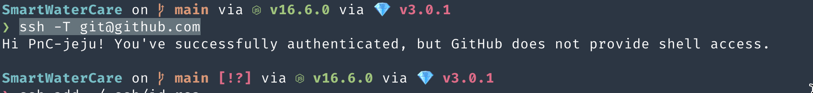
Figure 1: github test
(2) config/deploy.rb 설정- github settings (capistrano는 config/deploy.rb를 참고한다.)
위에서도 얘기했듯이, deploy.rb는 github의 source를 ec2의 특정위치로 복사하는 역할이다. 여기에는 github, branch 같은 정보와 ec2의 위치정보, 인증에 관한 정보가 필요하다.
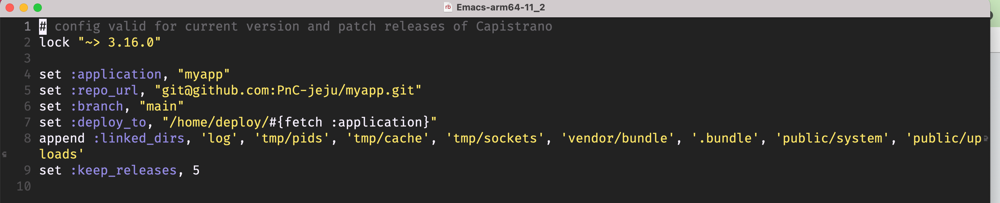
Figure 2: deploy.rb
deploy.rb는 github에 있는 source를 server의 특정위치로 복사하는 역할이다. 이때 필요한것은 github의 source의 위치를 나타내는 repourl과 branch이름이 필요하다. 또한 server의 주소와 저장될 위치를 기술해야 하는데, server의 위치정보는 production.rb에 기술하기 때문에, 여기서는 github의 source를 가져가서 어떤 위치에 놓을까하는 application과 deployto만 기술하면 된다. 아래와 같은 정보가 되겠다.
application: project이름. repourl: 저장소 위치 branch: branch 이름 deployto : deploy할 위치
아래에 보면 linkeddirs와 keeprelease라는게 붙었다. keeprelease는 5으로 설정되어 있다. 이것이 의미하는 것은 다음과 같다. 배포를 하면, 즉 cap production deploy라고 하면, capistrano가 github에서 source를 가져와서 repoto가 가르키는 위치에 release라는 폴더를 만들고, 거기에 저장한다. release폴더에 있는 source들의 개수를 의미한다. 가장 최근의 release는 current라는 이름의 폴더로 link연결 된다. 5는 5개의 release를 유지하겠다는 뜻이다. 즉, 5개만 최신본을 유지한다. 그래서 rollback도 가능하다. linkedfiles와 linkeddirs는 정확히 모르겠다.
set :application, "myapp" => project app이름 set :repourl, "git@github.com:PnC-jeju/myapp.git" => github위치 set :branch, "main" => 배포할려는 branch set :deployto, "/home/deploy/#{fetch :application}" => 배포 위치 append :linkeddirs, 'log', 'tmp/pids', 'tmp/cache', 'tmp/sockets', 'vendor/bundle', '.bundle', 'public/system', 'public/uploads' set :keepreleases, 5
(3) config/deploy/production.rb설정 -aws와 db환경 설정(config/deploy/production.rb)
production.rb의 설정은 단순하다. production.rb는 webserver, WAS서버, DB에 관련된 task를 하기위한 변수 설정을 기술한다. 단순하게 여기에선 아래처럼 server의 위치와 capistrano가 배포에 사용할 계정을 기술할 뿐이다. role에 관한 설명을 하자면, 우리는 STAGES에 하나의 server만 설정했다. 일반적으로 여러개의 server를 설정할 수 있다. app server, web server, db server등…각각의 역할이 있는 server 들이다. 또한 test server, release server등 여러가지로 만들 수도 있다. 각각의 역할이 있는 server들의 경우, server에 따른 role을 정해준다. 예를 들어서 web server의 경우, capistrano에서 webserver는 web이란 role을 부여해주고, db server는 capistrano에서 db라는 role을 정해주면 그것에 맞는 task가 수행되는 것이다. 우리는 하나의 server, production이란 server를 사용하기 때문에, app,db,web의 3개의 role을 주면 된다.
그런데, 조금 이상하지 않나? production에서 하는 일은, bundler를 실행해서 gem들을 설치한 후 rake db:migrate로 db연결하고 rails s로 server를 동작 시키듯이 app,web server를 동작 시켜야 한다. 그런데, 이런 과정을 하기위한 설정은 아래와 같이 단순하다. 물론 그럴 수 있다. task에서 다 정의 되어 있으니, 그래서 cap production deploy하면 config/deploy.rb에서 설정한 값과 production.rb에서 정의한 ip주소를 바탕으로 github에서 source를 이동 시킨다. 하지만, 실제 서버를 재시작하거나 bundler를 실행시킨다거나 하는 작업은 log에서도 안보이고 실제 server에서도 동작하지 않는다. 이것은 실제 task를 실행하는 Capfile 설정이 안되었기 때문이다. Capfile에서 ruby에 대한 설정, web과 app에 대한 기술을 해줘야 그에 맞는 task가 동작하기 때문이다. 현재는 capistrano/setup을 통해서 config/deploy.rb와 production.rb를 load하고 capistrano/scm/git을 통해서 source이동만을 처리한다. web,app,db, ruby,bundler에 대한 처리를 하기위해선 capfile에 추가적인 작업을 해줘야 한다. 이것은 (5)에서 다시 중첩해서 설명을 할 것이다.
server "13.125.158.130", user: "deploy", roles: %w{app db web}
(4) password check-git과 aws의 password?
git과 aws에 접속하기 위해서 password가 필요하다. 이것을 하기 위해선 다음과 같은 작업이 필요하다.
ssh-add ~/.ssh/company-ec2-keys.pem ssh-add ~/.ssh/idrsa
(5) cap production deploy - cd config, cap production deploy
이렇게 하고 cap production deploy를 해보자. 동작은 되고 아무 문제도 없지만, server가 재시작 된다거나, bundler가 실행되거나 하는 정황이 보이지 않는다. 이것은 capfile에서 config/deploy.rb, production.rb를 load하고 scm/git으로 git에 있는 source를 server에 이동만 했기 때문이다. 옮겨진 source에 bundler를 사용해서 gem을 설치하고, db migration을 하고 web server와 app server를 실행 하는것은 Capfile에 기술되어야 한다.
(6) capistrano 추가작업- capfile에 추가작업 추가
(6-1) Capfiles에 추가 작업
Capfile끝에 아래를 추가한다. 이 작업들은 db와 web server와 관련이 있다. 그래서 바로 cap production deploy를 실행하면 에러가 발생한다. web과 db설정이 추가로 들어간다.
require 'capistrano/rails' require 'capistrano/passenger' require 'capistrano/rbenv'
set :rbenvtype, :user set :rbenvruby, '3.0.1'
(6-2) bundle lock –add-platform x8664-linux
Your bundle only supports platforms ["x8664-darwin-19"] but your local platform is x8664-linux. Add the current platform to the lockfile with 'bundle lock –add-platform x8664-linux' and try again.
capistrano추가작업은 server에 접속해서 bundler를 실행하는데, Gemfiles.lock에 server platform이 기술 안되어 있기 때문에 에러가 난다. 그래서 미리 다음과 같은 명령으로 Gemfile.lock 추가하자. Gemfile.lock은 ec2 server에서 bundler가 실행할 gem file목록이다. 그래서 github에 push를 해줘야 server에서 사용할 수 있기 때문에 github에 commit과 push를 해줘야 한다.
이제 모든 설정이 다 끝났구나하고 cap production deploy하면 어떻게 될까? bundler를 실행중에 에러가 발생한다. 왜 발생하는지는 모르겠다. 인터넷을 찾아보니 공간 부족때문이라고 한다. gem을 설치할 공간이 없기 때문이란다. 우선 쓰잘대기 없는거 지우고 다시 cap production deploy를 해본다. hang out이 걸린다. 아무런 진전 없이 bundler:install에서 계속 멈춰 있다. 다시 ec2를 중지하고 다시 시작한후 최대한 지울꺼 지워서 용량을 확보한 후에 다시 cap production deploy하니 bundler:install 단계는 지나갔다. 대신 assets:precompile에서 secretkeybase문제로 에러가 발생했다. 아래에 image는 추가했다. secretkey문제는 아래에 해결 방법이 있다.
bundle lock –add-platform x8664-linux
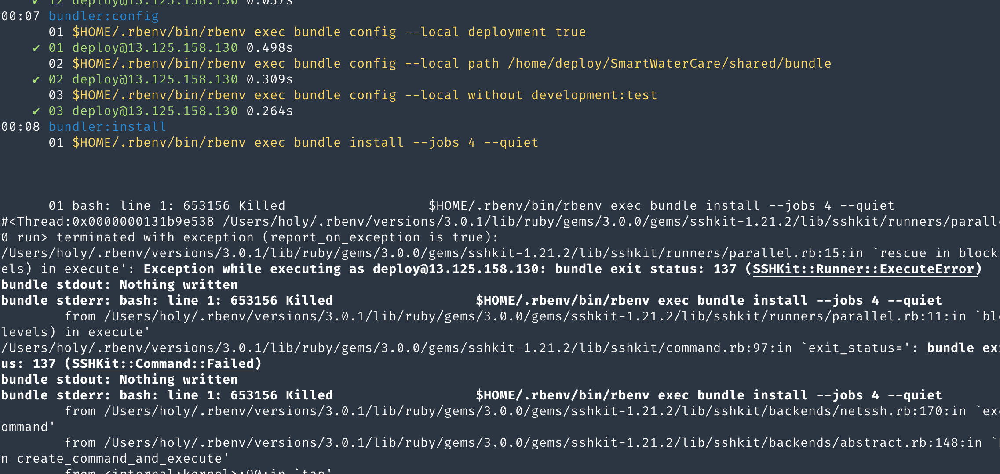
Figure 3: bundler error
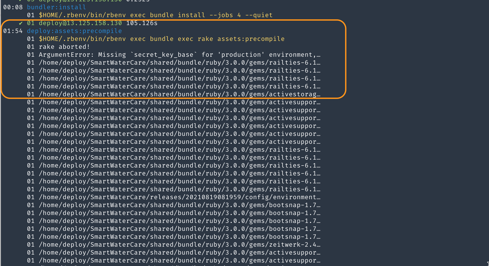
Figure 4: bundler error2
(6-3) .rbenv-vars에 master key와 secret base설정
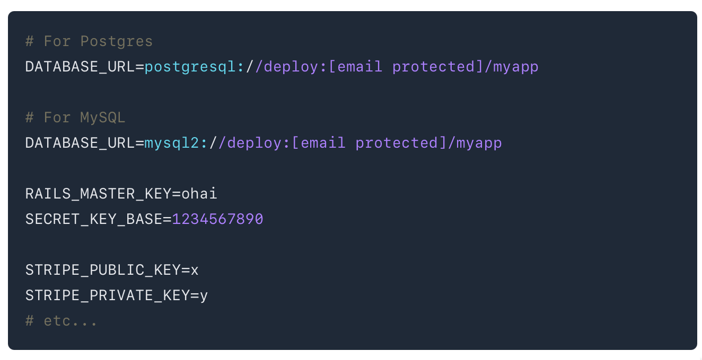
Figure 5: rbenv 설정
- server에 ssh연결을 한다. project폴더 아래에 .rbenv-vars라는 파일을 만든다. 위의 그림처럼 setting하면 된다.
- [DATABASEURL]은 위에 좀 햇갈리는데, 그냥 아래와 같은 규칙이 있다고 생각하면 편하다. DATABASEURL=mysql2://<username>:<password>@localhost/<database> 이거에 맞게 써주면 된다.
- [RailsMasterKey] local의 /config아래의 masterkey파일 내용을 서버의 .rbenv-vars에 복사한다.
- [SecretKeyBase] local에서 secretkeybase를 얻어야 하는데, 다음과 같이 한다. local의 config폴더로 이동한다. shell에서 EDITOR=vim rails credentials:edit 입력한다. secretkeybase를 서버의 .rbenv-vars파일에 복사한다. 아래 그림을 참조한다.
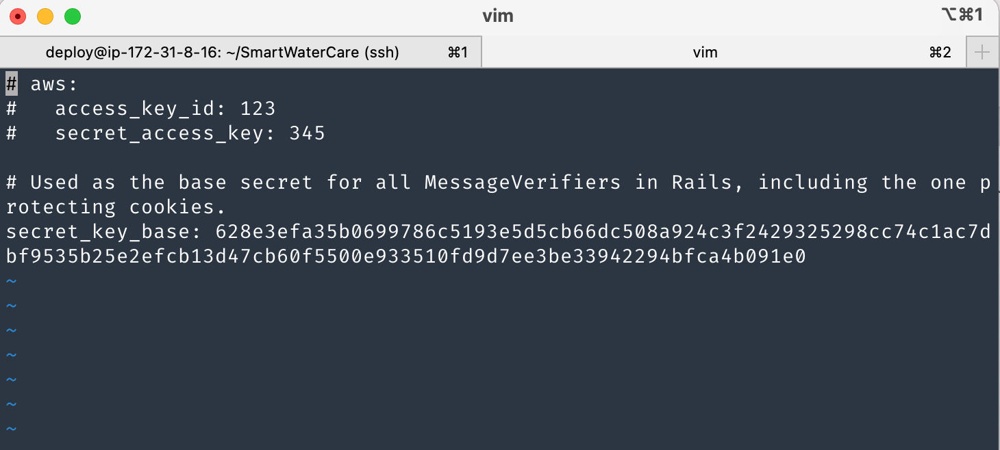
Figure 6: secretkey
여기서 cap production deploy를 하면 어떻게 될까? 아래 그림처럼 rake db:migration에서 에러가 난다. mysql2라는 gem이 없다는 것이다. 그러면 (7)에서 처리를 해줘야 한다.
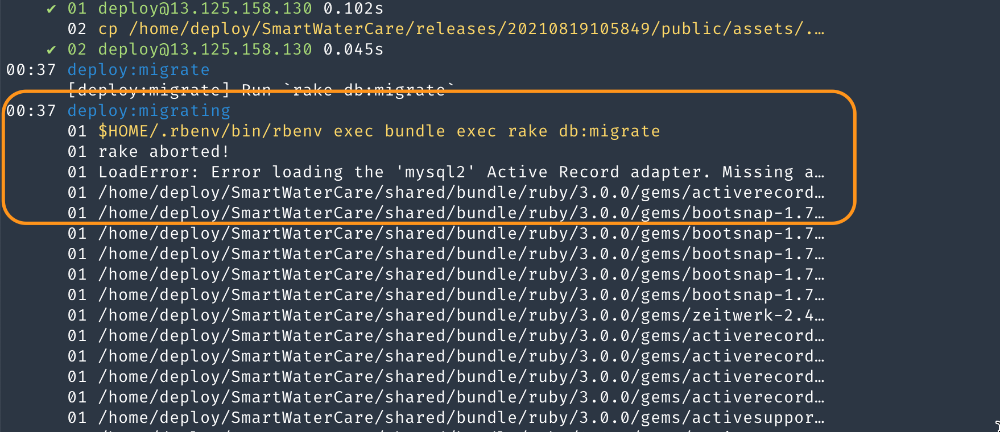
Figure 7: db error
(7) [DB] 관련 설정
- [1]Gemfiles에 mysql2 gem을 추가한다.
- bundler를 실행한 후에, github에 commit push한다.
- cap production deploy를 해본다. => 이렇게 하면 에러없이, 별다른 문제 없이 deploy는 된다. 하지만, 제대로 된 db설정을 한 게 아니다. database.yml에서 구체적으로 production, development, test환경에서 우리가 사용하는 db를 기술해야 한다.
- [2] database.yml에서 처리 production환경과 development, test환경 모두 mariadb를 사용할 것이기 때문에 공통적으로 mysql2 adapter를 사용한다. database명, userid,password,socket을 명시해야 한다. production에 해당하는 서버와 local에 해당하는 development에서 모두 해주어야 한다. 왜냐면, db server인 mariadb에 연결해야 하기 때문이다. database.yml을 작성하기 이전에 login을 할 수 있는 사용자와 기술한 database이름을 server나 local mariadb에 이미 만들어놔야 한다. 아래에서 더 자세히 설명.
- [3] .rbenv-vars처리: 이전에 처리했지만, 다시 한번 작성한다.
[1] gem mysql2를 Gemfile에 추가.
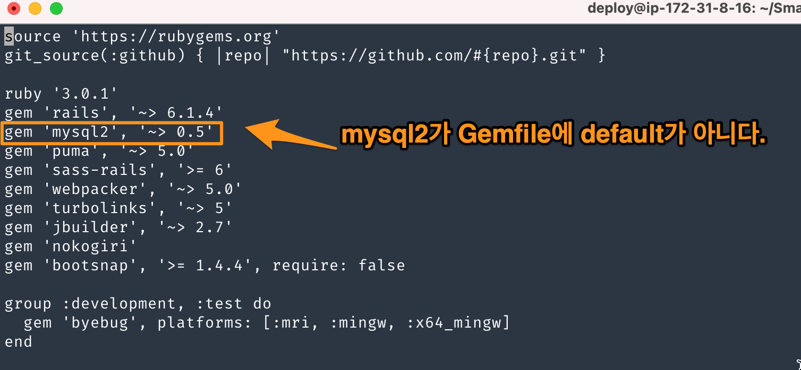
Figure 8: mysql2
위와 같이 version을 잘 맞추어 넣어준 후에, bundle, bundle update를 한다. 그 이후 git에 반영을 해야 한다.
[2] database.yml처리 (local 처리)
local과 server에는 이미 mariadb가 설정되었다고 가정한다. database를 만들고, 이에 접근할 수 있는 사용자를 만들어야 한다. 또 권한도 주고…local과 server는 동일하게 구성한다. 다만 차이는 있다. 우선 local에서 구성한다.
- [database 만들기]
database이름은 rails new로 만든 web app이름과 같게 해준다. 다만 소문자로 만든다. local과 server동일하게 한다. 내 경우, smartwatercare라고 했다. 만드는 법은 다음과 같다.
- local에서 root로 접근한다. mysql -u root -p
- local에서 db 만든다. ex) CREATE DATABASE IF NOT EXISTS smartwatercare;
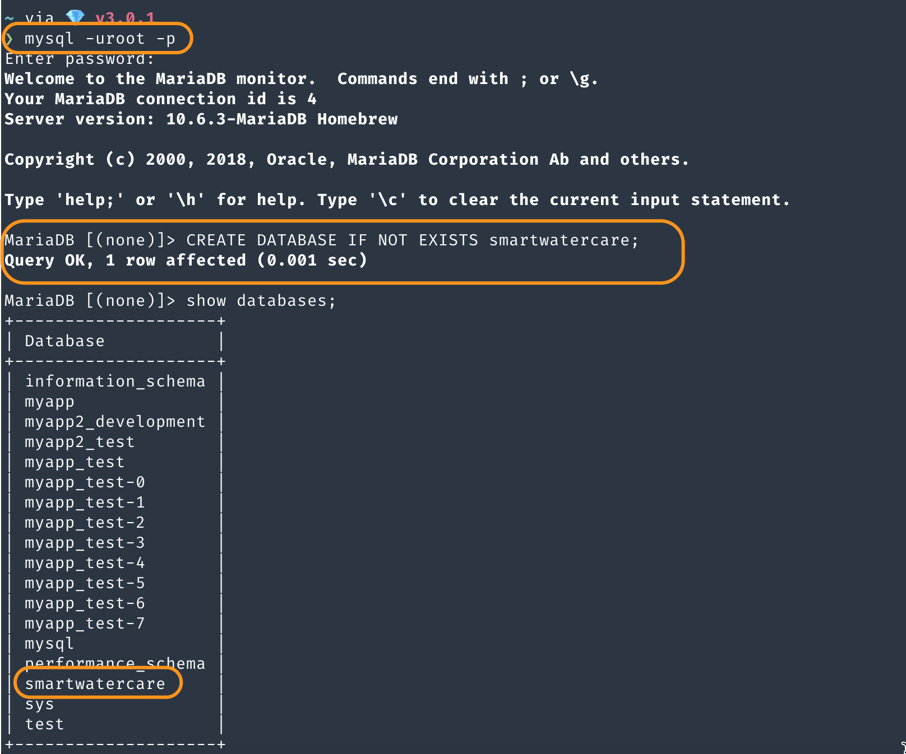
Figure 9: create db
- local에서 사용자 만들기
사용자는 deploy라는 계정을 만든다. capistrano가 db에 접근할 수 있어야 하기 때문이다. mysql이나 mariadb가 특이한게 있는데, 계정이 이름만으로 만들어지지 않는다는 것이다. email주소처럼 뒤에 host가 붙는다. 권한때문에 그렇다. 외부에서 접근하는 경우와 localhost에서 접근하는 경우 때문에 사용자 계정을 만들때 2개를 만들어야 한다. localhost와 %로 외부 host에서 접근하는 계정이다.
ex) CREATE USER IF NOT EXISTS 'deploy'@'localhost' IDENTIFIED BY '1234';
ex) CREATE USER IF NOT EXISTS 'deploy'@'%' IDENTIFIED BY '1234';
그런데 여기서는 local에서만 적용되는 계정이라서, 2번째의 예는 사용하지 않는다.
- 사용자 확인 사용자가 미리 있을 수 있다. mariadb는 mysql db에 user라는 table에 사용자 정보가 있다. 확인해 보자. ex) use mysql; select host,user,password,plugin from user
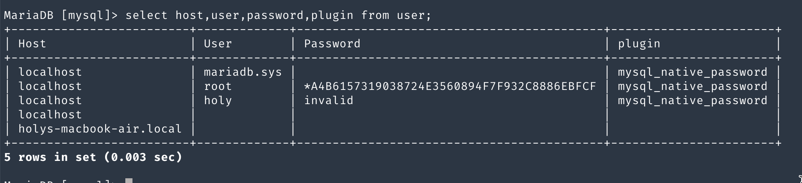
Figure 10: dbuser
다행히 없다. 만일 있다면, drop user 사용자@ %로 지워야 한다. 따라서, 다음 명령어로 deploy@localhost라는 사용자를 만든다. 난 deploy는 pw를 주지 않았다. CREATE USER IF NOT EXISTS 'deploy'@'localhost' ;
그리고 smartwatercare라는 db에 접근할 수 있는 모든 권한을 준다. GRANT ALL PRIVILEGES ON myapp.* TO 'deploy'@'localhost';
이렇게 한 후에 FLUSH PRIVILEGES;를 해주는 것을 잊지말자.
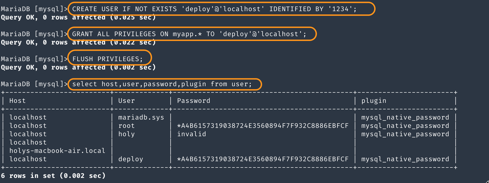
Figure 11: createuser
- production server에서 사용자 만들기 production server는 사용자가 2명이다. capistrano가 사용하는 deploy사용자와 외부에서 접근하는 사용자가 있다. deploy사용자와 외부 사용자는 모두 localhost와 외부에서도 사용하게 할 예정이기 때문에 2개의 계정을 만들면 된다. deploy와 webuser01이다. 난 이미 있기 때문에 생략했다. 참고로 deploy의 pw는 설정하지 않았다. 다만 권한 설정만 다시 해준다. 이렇게 해준다음에 database.yml을 설정해주면 된다.
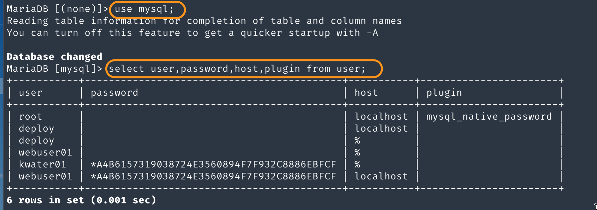
Figure 12: server user
- database.yml 설정
database의 기본 설정은 아래 그림을 참조하면 될듯 하다. 여기서 database는 실제는 참조되지 않는다. 왜냐면 .rbenv-vars라는 환경변수에서 database url에 database명을 기록했기 때문에 거기에 명시된 database명으로 capistrano는 접근한다. 그래서 어떻게 보면 database.yml에 기술하지 않아도 될듯하다.
나는 deploy의 pw를 설정하지 않았다. 그래서 password항목을 지웠다. 만일, password가 있는경우, 환경변수에 저장하고 불러다 쓰는 방식을 이용한다. 이렇게 하고 github에 저장한 이후 cap production deploy를 해보자.
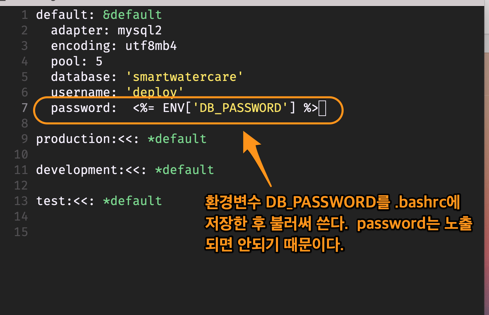
Figure 13: database
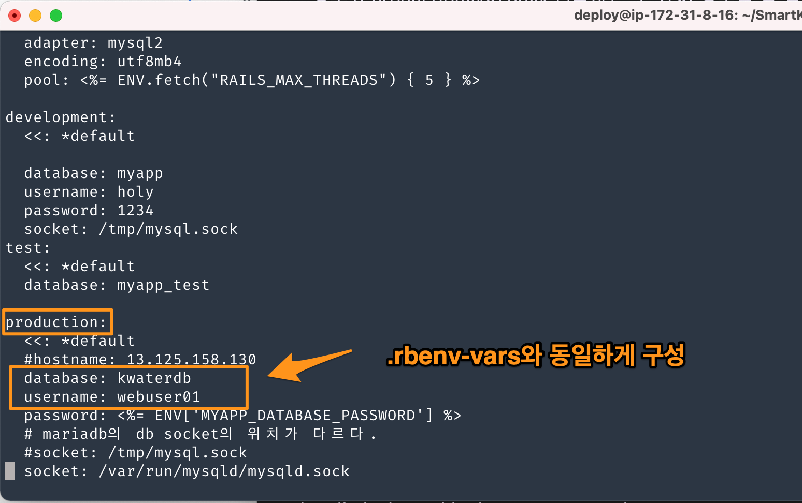
Figure 14: rbenvars2
[3] .rbenv-vars변수 처리
.rbenv-vars에서 database url을 기술하는데, 여기서 db명이 database.yml과 겹친다. 그런데 실제 capistrano가 사용하는 것은 환경변수의 database명이다. 그래서 rbenv-vars에서 사용하는 db명과 database.yml에 기술되는 db명을 일치 시키는게 중요하다.
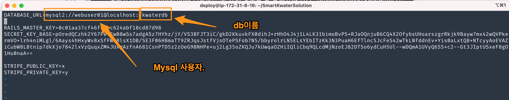
Figure 15: mysql3
(8) [WEB & APP] nginx서버와 passenger를 키고 새로만든 rails app을 연동시키려면?
새로만든 rails app은 nginx웹서버와 passenger라는 app서버는 새로만든 rails app의 존재를 알지 못한다. nginx->passenger->rails app을 호출하는 구조이기 때문에 nginx의 sitesenabled폴더에 보면 설정파일이 있을것이다. 이 파일을 보면 servername이라는 항목에 rails app이름이 기술되어 있다. 새로만든 rails app이름으로 해주어야 한다. 그런데 nginx에서 site-enabled폴더 안에 있는 설정파일을 기술하는 방식은 좀 다르다. site-avaliable폴더를 보면 site-enabled폴더안의 파일이 있는 것을 볼 수 있다. symbolic link로 연결되어 있기 때문이다. 수정은 보통 site-available에 있는 설정파일을 수정한다. 자동으로 반영된다. 근데 이렇게 고전적인 방식으로 할 필요는 없다. 그냥 sites-enabled폴더에서 수정한다.
- ssh로 server로 접속한다.
- "/etc/nginx/sites-enabled/어떤파일"을 수정한다.
(1) nginx에서 수행할 rails app지정
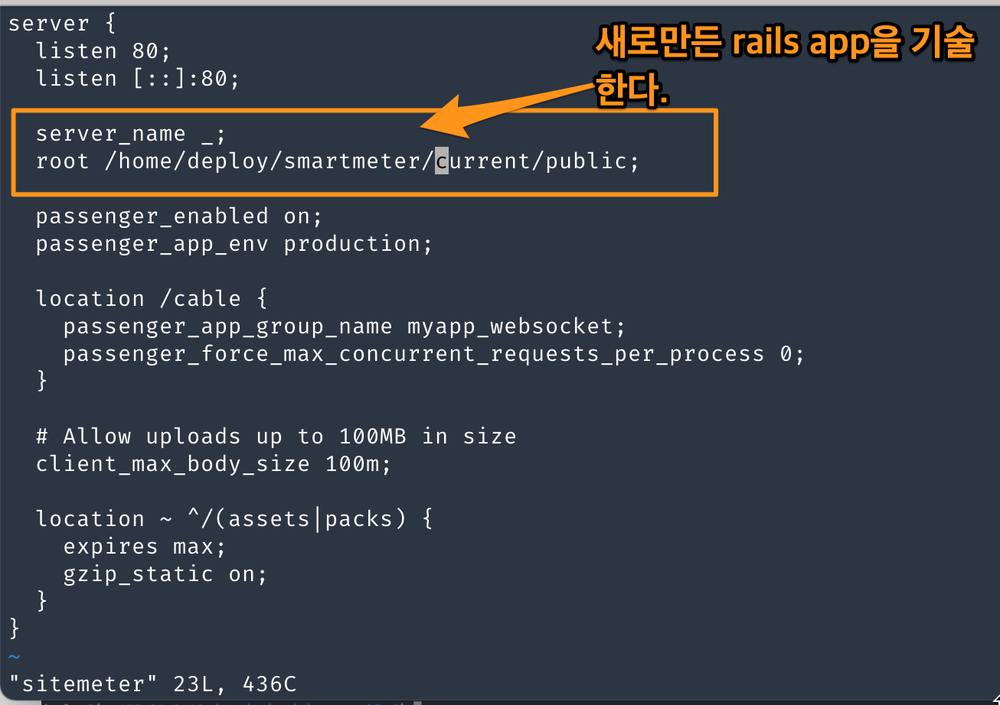
Figure 16: nginxsettings1
nginx가 시작되면 nginx는 sitesenabled에 기술된 파일을 실행한다. 여기에 보면 새로만든 rails app의 이름은 servername으로 설정한다. 그리고 module로 끼워넣은 passenger WAS 를 켜서, servername을 참조할 수 있게 했다. 여기까지하고 cap production deploy할때, 에러가 발생하는지, web page연결이 잘 되는지 확인해본다. 우선 에러는 없고, web page연결은 잘 안될 것이다. route 설정이 안되어 있기 때문이다. 반면에 rails s에서 local에서는 잘동작하는 것을 볼 수 있다. server에서
4 client의 database.yml설정 (development)
capistrano를 사용해서 ci/cd로 client의 source를 server로 반영할 수 있었다. 하지만, db의 data는 동일하지 않다. server에서 사용하는 db를 같이 사용할 수 있게 해자.
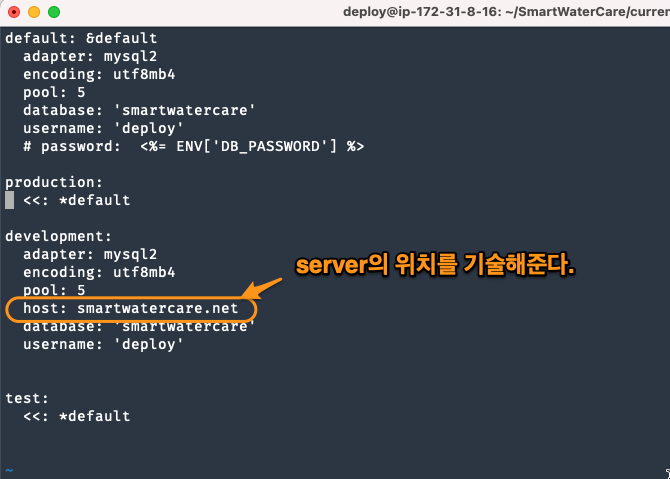
Figure 17: db settings1
5 서버에 관해서 - testing
5.1 nginx 기본 및 test
nginx와 관련한 설정은 크게 보면 2가지가 있다. 첫째, /etc/nginx/nginx.conf가 있다. 이것은 nginx에 대한 설정이다. 둘째, /etc/nginx/site-enabled/설정 파일. 이것은 passenger와 연결되는 rails app에 대한 정보, domain주소와 같은 설정이 담겨져 있다. 이것이 nginx에 대한 모든 것이다.
rails app과 별도로 nginx 서버가 제대로 동작되는지 확인할 필요가 있다. 아래 설명처럼 해보자. nginx가 설치 되어 있고 nginx가 구동되어 있다면? etc/nginx/site-enabled 에 있는 설정 파일이 실행된다. 그 설정 파일에 root를 기술하고, root아래에 index: index.html로 해주면 root폴더의 index.html이 화면에 보이게 된다. 이것을 통해서 nginx가 동작하고 있다는 것을 테스트할 수 있다.
etc/nginx/site-available 에서 작성한 설정을 etc/nginx/site-enabled 에 link걸어서 사용한다. 아파치에서 사용하는 방식이다. 즉 server에 대한 설정을 available에서 하고, link걸어서 적용시킨다. 근데 나는 별 상관하지 않았다.
5.2 nginx + passenger
passenger는 WAS다. 즉 rails를 구동 시키는 역할을 한다. ruby를 설정하고, ruby로 rails app을 실행시킨다고 보면 된다. local에서 rails s를 하면 puma라고 하는 was가 실행되는 것과 비슷하다. 이 passenger는 module형태로 제공이 된다. nginx를 기동하면 /etc/nginx/modules/passenger.so가 load된다. 하지만 중요한것은 passenger가 포함되던, nginx만 단독으로 하던간에 /etc/nginx/site-enabled/에 있는 설정이 실행된다는 것이다. 그 설정에서 passenger에 대한 설정을 추가할 뿐이다. 즉 ngixn +passenger가 잘 동작하는지 확인하기위해선, /etc/nginx/site-enabled/의 설정이 제대로 동작하는지 확인하면 된다. 그렇다고 해서 passenger의 설정파일이 없는 건 아니다. /etc/nginx/conf.d/mod-http-passenger.conf에서 passenger의 설정을 한다.
(8) web 관련 설정
etc/nginx/conf.d - passenger설정
/site-enabled/config - nginx 설정
error처리 모음.
nginx가 start되지 않고, passenger관련 에러 (/var/log폴더 삭제시)
시스템을 확장한다거나, 데이터부족으로 /var/log/nginx 폴더가 삭제되었을때, ec2를 다시 껏다 키면 아래와 같은 에러가 나타난다. nginx가 start되지도 않는다. 이런 경우에 /var/logn/nginx 폴더를 만들어 주면 된다.
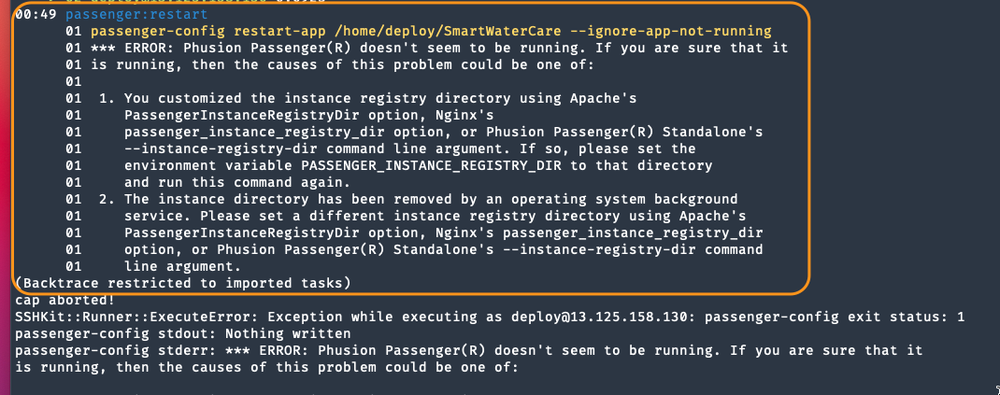
Figure 18: error1
bundle에서 에러
bundle lock –add-platform x8664-linux
DB관련 권한 문제
우선 사용자가 사용할 수 있는 db여야 한다. 즉 mysql -udeploy로 접속해서 show databases;를 해서 db가 있는지 확인해야 한다. 그런 다음에 해당 db의 모든 권한을 줘야 한다. 예를 들어서 deploy란 사용자가 kwaterdb라는 db가 있다면, 다음 코드를 추가한다.
GRANT ALL PRIVILEGES ON kwaterdb.* TO 'deploy'@'localhost'; GRANT ALL PRIVILEGES ON kwaterdb.* TO 'deploy'@'%'; FLUSH PRIVILEGES;
6 log에 관해서
6.1 rails log
less /home/deploy/smartwatercare/current/log/production.log
6.2 nginx & passenger log
sudo less /var/log/nginx/error.log